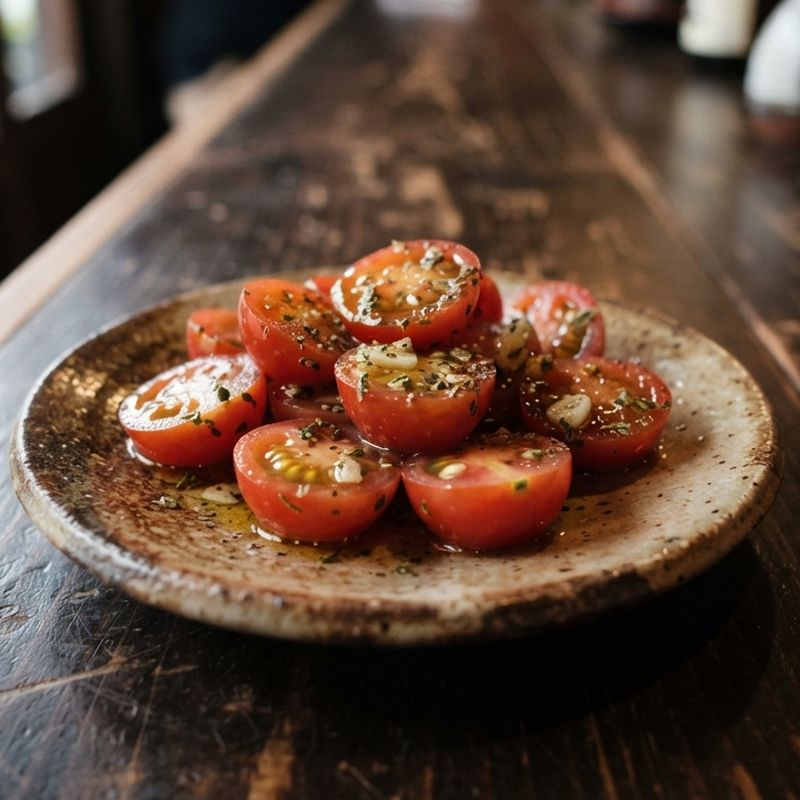
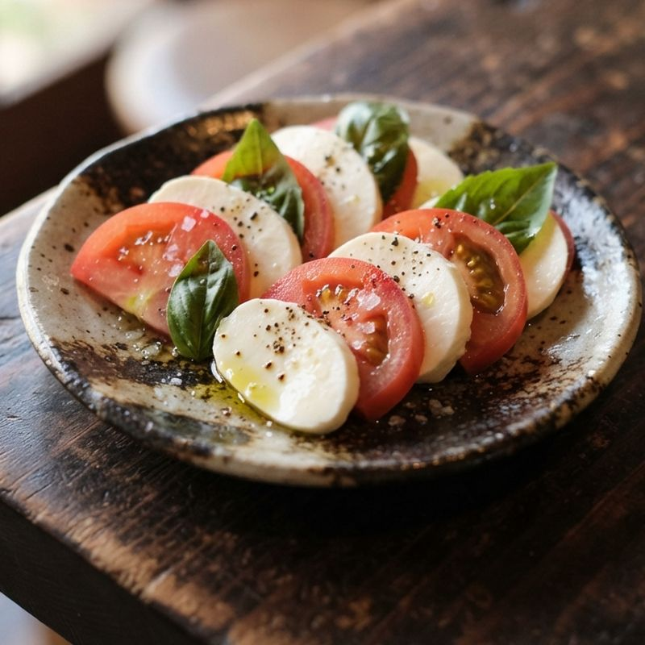
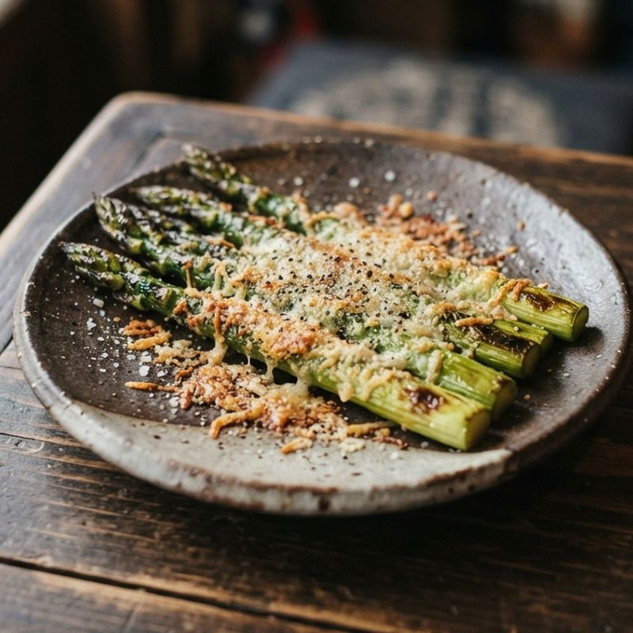
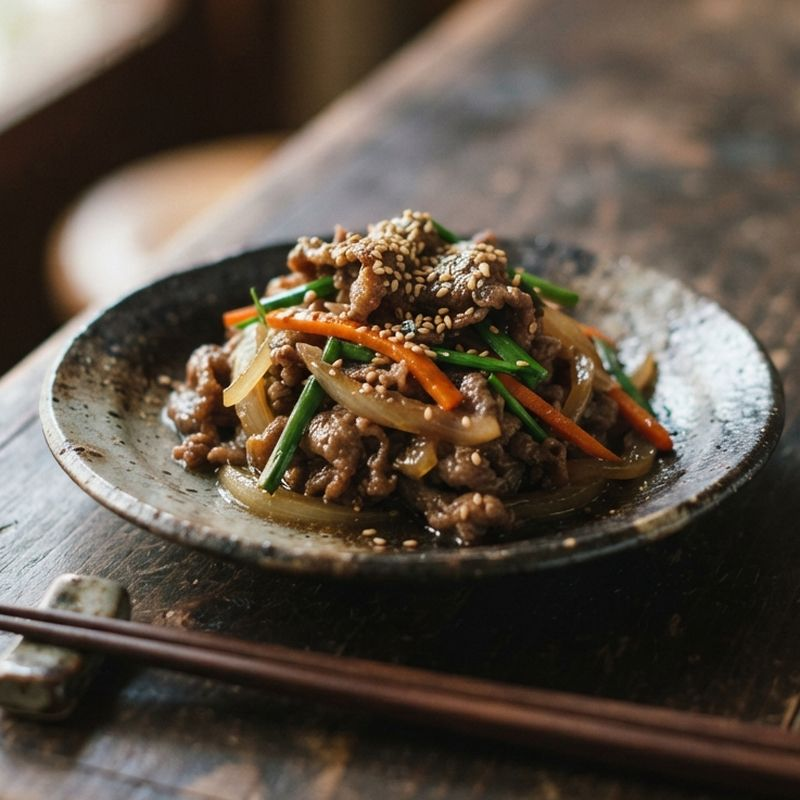
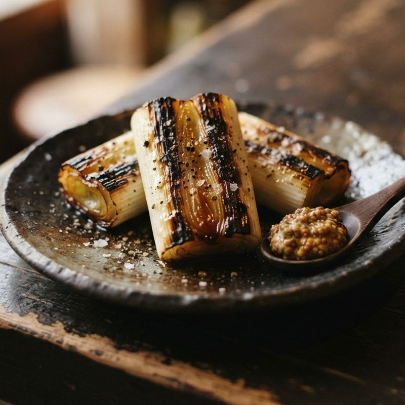

サケノツマミ ／ レモンサワーに合うつまみ
レモンサワーに合うつまみ 74品
作る時間の短い順に並べています。
 塩だれキャベツ3分・火を使わない｜ちぎって和えるだけ。居酒屋のお通しの味。
塩だれキャベツ3分・火を使わない｜ちぎって和えるだけ。居酒屋のお通しの味。 キムチ奴3分・火を使わない｜のせるだけ。ピリ辛と冷たい豆腐の組み合わせ。
キムチ奴3分・火を使わない｜のせるだけ。ピリ辛と冷たい豆腐の組み合わせ。 冷やしトマトの塩昆布和え3分・火を使わない｜塩昆布のうまみで、トマトがもう一段おいしい。
冷やしトマトの塩昆布和え3分・火を使わない｜塩昆布のうまみで、トマトがもう一段おいしい。- 豆腐の塩昆布ごま油がけ3分・火を使わない｜塩昆布とごま油で、いつもの冷奴が変わる。
 無限ピーマン5分・レンジ｜レンジで2分。ツナのうまみで箸が止まらない。
無限ピーマン5分・レンジ｜レンジで2分。ツナのうまみで箸が止まらない。 たたききゅうりの梅しそ和え5分・火を使わない｜梅の酸味としその香りで、口がさっぱり。
たたききゅうりの梅しそ和え5分・火を使わない｜梅の酸味としその香りで、口がさっぱり。
ミニトマトのマリネ5分・火を使わない｜作っておけば、冷やすほどおいしい。 もやしのナムル5分・レンジ｜1袋を使い切り。作り置きにも。
もやしのナムル5分・レンジ｜1袋を使い切り。作り置きにも。 サバ缶の玉ねぎレモンマリネ5分・火を使わない｜缶を開けて、玉ねぎとレモンで和えるだけ。
サバ缶の玉ねぎレモンマリネ5分・火を使わない｜缶を開けて、玉ねぎとレモンで和えるだけ。
カプレーゼ5分・火を使わない｜トマトとモッツァレラを交互に並べるだけ。 カニカマときゅうりの中華和え5分・火を使わない｜さいて切って和えるだけ。さっぱり中華味。
カニカマときゅうりの中華和え5分・火を使わない｜さいて切って和えるだけ。さっぱり中華味。 長芋の梅おかか和え5分・火を使わない｜シャキシャキの長芋に、梅とかつお節。
長芋の梅おかか和え5分・火を使わない｜シャキシャキの長芋に、梅とかつお節。 春菊とのりの韓国風サラダ5分・火を使わない｜春菊は生がうまい。ごま油と韓国のりで。
春菊とのりの韓国風サラダ5分・火を使わない｜春菊は生がうまい。ごま油と韓国のりで。 タイ風きゅうりのサラダ5分・火を使わない｜ナンプラーとライムで、屋台の味。
タイ風きゅうりのサラダ5分・火を使わない｜ナンプラーとライムで、屋台の味。 オクラのおかか和え5分・レンジ｜ねばねばオクラに、かつお節と醤油。
オクラのおかか和え5分・レンジ｜ねばねばオクラに、かつお節と醤油。- ズッキーニのナムル5分・レンジ｜レンジで1分半。ごま油の香りで。
- サラダチキンのバンバンジー5分・火を使わない｜さいてのせるだけ。ごまだれでこっくり。
- たこのキムチ和え5分・火を使わない｜ゆでだこを、キムチとごま油で和えるだけ。
- しめさばの薬味たっぷりのせ5分・火を使わない｜買ってきたしめさばを、香味野菜で格上げ。
- いかとめかぶのしょうがポン酢5分・火を使わない｜ねばねばとこりこり。さっぱり食べられる。
- クリームチーズのコチュジャン和え5分・火を使わない｜甘辛だれで、韓国風にひと手間。
 ほうれん草のごま和え6分・レンジ｜すりごまたっぷりの、ほっとする味。
ほうれん草のごま和え6分・レンジ｜すりごまたっぷりの、ほっとする味。 小松菜のナンプラー炒め6分・フライパン｜強火でさっと。空芯菜炒めの味を小松菜で。
小松菜のナンプラー炒め6分・フライパン｜強火でさっと。空芯菜炒めの味を小松菜で。 タコのカルパッチョ8分・火を使わない｜薄く切って並べるだけで、ごちそう感。
タコのカルパッチョ8分・火を使わない｜薄く切って並べるだけで、ごちそう感。 サーモンのレモンマリネ8分・火を使わない｜刺身用サーモンを、レモンとディルで洋風に。
サーモンのレモンマリネ8分・火を使わない｜刺身用サーモンを、レモンとディルで洋風に。 レンジ蒸しなすの中華だれ8分・レンジ｜とろっとしたなすに、甘酢の香味だれ。
レンジ蒸しなすの中華だれ8分・レンジ｜とろっとしたなすに、甘酢の香味だれ。 ニラ玉8分・フライパン｜ふわふわ卵に、にらの香り。
ニラ玉8分・フライパン｜ふわふわ卵に、にらの香り。- きのこのレンジマリネ8分・レンジ｜きのこを2種、レンジで蒸してマリネ液に浸すだけ。
- トマトと卵の中華炒め8分・フライパン｜トマトの酸味と、ふんわり卵。
- ちくわときゅうりのごまポン酢8分・火を使わない｜切って和えるだけ。歯ごたえのいい一品。
- ねぎのパジョリ8分・火を使わない｜韓国焼肉の付け合わせを、ねぎだけで。
- 厚切りハムステーキ8分・フライパン｜厚く切って焼くだけ。からしマヨを添えて。
- レンジ温玉のキムチのせ8分・レンジ｜とろっと黄身を、キムチにからめて。
 キャロットラペ10分・火を使わない｜にんじん1本を、甘酸っぱいサラダに。
キャロットラペ10分・火を使わない｜にんじん1本を、甘酸っぱいサラダに。 豚バラともやしのレンジ蒸し10分・レンジ｜重ねてチンして、ポン酢をかけるだけ。
豚バラともやしのレンジ蒸し10分・レンジ｜重ねてチンして、ポン酢をかけるだけ。 豚キムチ10分・フライパン｜炒めるだけで、ごはんにもお酒にも合う一品。
豚キムチ10分・フライパン｜炒めるだけで、ごはんにもお酒にも合う一品。 ナチョス10分・トースター｜トルティーヤチップスに、チーズとサルサ。
ナチョス10分・トースター｜トルティーヤチップスに、チーズとサルサ。- 豚バラのねぎ塩レモン10分・フライパン｜ねぎ塩だれにレモンを効かせて、さっぱり。
- レンジ豚しゃぶの香味サラダ10分・レンジ｜お湯を沸かさず、レンジで豚しゃぶ。
- 大根のソムタム風サラダ10分・火を使わない｜青パパイヤの代わりに大根で。甘酸っぱくてピリ辛。
- エリンギのコチュジャン焼き10分・トースター｜裂いて塗って焼くだけ。甘辛で香ばしい。
- 牛肉とピーマンのクミン炒め10分・フライパン｜クミンと唐辛子で、中国の屋台の香り。
- えびとブロッコリーの塩にんにく蒸し10分・レンジ｜冷凍えびで、レンジ4分の中華風。
- コーンチーズ10分・トースター｜韓国の居酒屋の、とろーり甘じょっぱい定番。
 砂肝のにんにく炒め12分・フライパン｜コリコリ食感に、にんにくとレモン。
砂肝のにんにく炒め12分・フライパン｜コリコリ食感に、にんにくとレモン。 セロリの浅漬け12分・火を使わない｜ポリ袋でもんで10分。香りでさっぱり。
セロリの浅漬け12分・火を使わない｜ポリ袋でもんで10分。香りでさっぱり。 ヤムウンセン12分・レンジ｜春雨とえびの、タイの酸っぱ辛いサラダ。
ヤムウンセン12分・レンジ｜春雨とえびの、タイの酸っぱ辛いサラダ。 ガパオのレタス包み12分・フライパン｜バジル香るひき肉を、レタスで巻いて。
ガパオのレタス包み12分・フライパン｜バジル香るひき肉を、レタスで巻いて。
アスパラの粉チーズ焼き12分・トースター｜丸ごと焼いて、チーズをこんがり。 ズッキーニのチーズ焼き12分・トースター｜輪切りを並べて、チーズをのせて焼く。
ズッキーニのチーズ焼き12分・トースター｜輪切りを並べて、チーズをのせて焼く。 焼きトマトのパン粉焼き12分・トースター｜加熱したトマトは、甘みが増す。
焼きトマトのパン粉焼き12分・トースター｜加熱したトマトは、甘みが増す。- じゃがいもの酢辣炒め12分・フライパン｜シャキシャキ食感の、中華のじゃがいも。
- オクラの豚巻きポン酢12分・レンジ｜オクラを豚肉で巻いて、レンジで蒸すだけ。
- いかのコチュジャン炒め12分・フライパン｜甘辛いたれで、韓国の屋台風に。
- ヤムカイダオ12分・フライパン｜カリカリ目玉焼きの、タイ風サラダ。
 鶏もものねぎ塩焼き15分・フライパン｜皮はパリパリ、ねぎ塩だれをたっぷり。
鶏もものねぎ塩焼き15分・フライパン｜皮はパリパリ、ねぎ塩だれをたっぷり。 にらチヂミ15分・フライパン｜外はカリッ、中はもちっと。
にらチヂミ15分・フライパン｜外はカリッ、中はもちっと。 ゴーヤチャンプルー15分・フライパン｜ほろ苦ゴーヤを、豆腐と卵で。
ゴーヤチャンプルー15分・フライパン｜ほろ苦ゴーヤを、豆腐と卵で。 サムギョプサル風 豚バラ焼き15分・フライパン｜カリカリに焼いた豚バラを、サンチュで包む。
サムギョプサル風 豚バラ焼き15分・フライパン｜カリカリに焼いた豚バラを、サンチュで包む。
牛こまのプルコギ15分・フライパン｜甘辛いたれで、野菜と一緒にさっと炒める。 えのきのベーコン巻き15分・トースター｜巻いて焼くだけ。ベーコンの脂がしみる。
えのきのベーコン巻き15分・トースター｜巻いて焼くだけ。ベーコンの脂がしみる。
長ねぎのオーブン焼き15分・トースター｜太いねぎを焼くだけ。とろっと甘い。 ツナマヨのピーマン詰め焼き15分・トースター｜肉を使わず、切って詰めて焼くだけ。
ツナマヨのピーマン詰め焼き15分・トースター｜肉を使わず、切って詰めて焼くだけ。- 鶏皮のパリパリ焼き15分・フライパン｜じっくり焼いて脂を出す。せんべいのような食感。
- ささみの梅しそチーズ焼き15分・トースター｜梅としその香りに、とろけるチーズ。
- かぶの塩レモン和え15分・火を使わない｜薄切りをもむだけ。みずみずしい歯ざわり。
- レンジチャプチェ15分・レンジ｜春雨は戻さずに、牛肉と一緒にレンジで。
- ハムのマカロニサラダ15分・レンジ｜マカロニもレンジでゆでる、居酒屋の定番。
- シーフードミックスのレモンマリネ15分・レンジ｜冷凍のシーフードで、作り置きの一品。
- えびマヨ15分・フライパン｜少ない油で焼いて、甘いマヨだれで。
- みょうがの甘酢漬け20分・火を使わない｜切って漬けるだけ。きれいな桜色に。
- 高野豆腐の唐揚げ風20分・フライパン｜じゅわっと、お肉みたいな食べごたえ。
 チーズタッカルビ25分・フライパン｜甘辛い鶏肉に、とろけるチーズをからめて。
チーズタッカルビ25分・フライパン｜甘辛い鶏肉に、とろけるチーズをからめて。- 豚肉のサテ風 ピーナッツだれ25分・トースター｜ピーナッツのたれで、東南アジアの屋台風。
飲みすぎに注意しましょう。飲酒運転は法律で禁止されています。
利用規約プライバシーポリシー